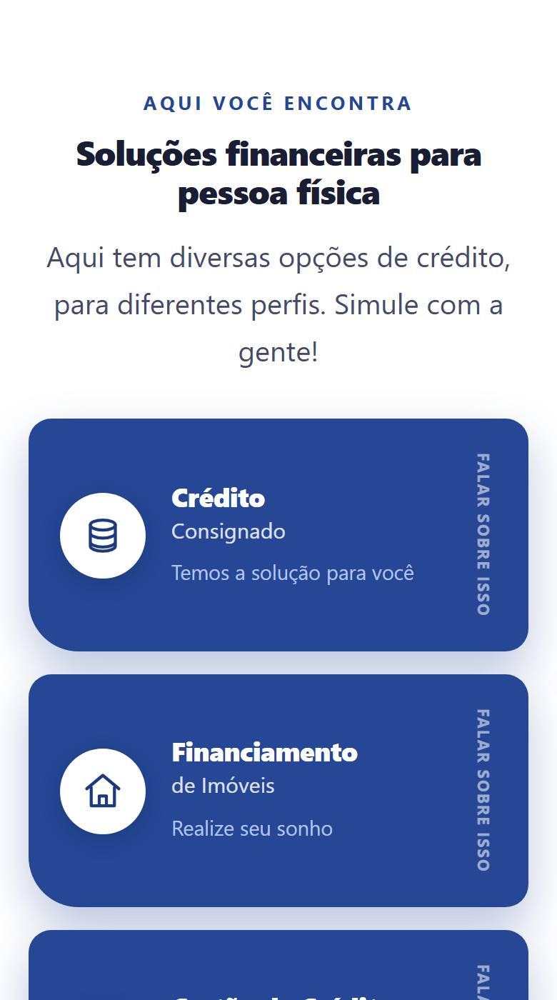
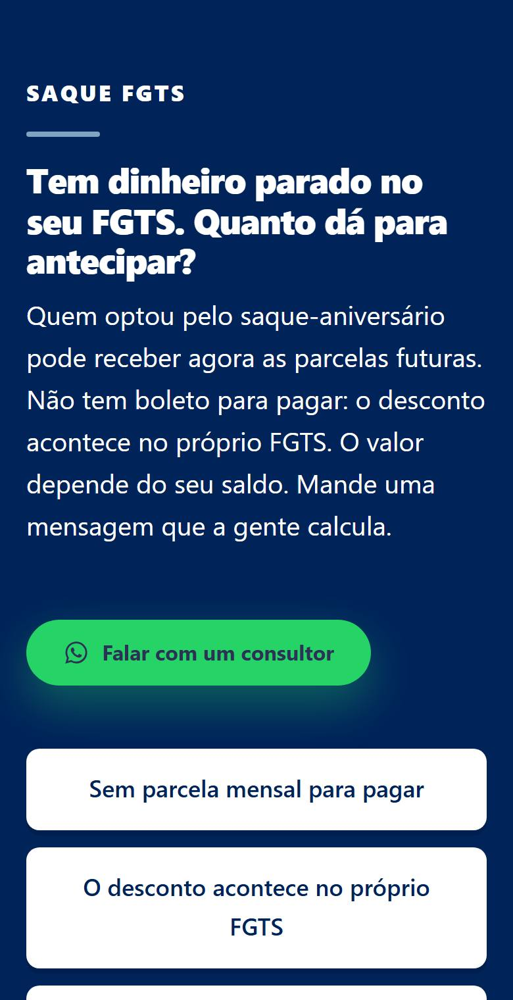
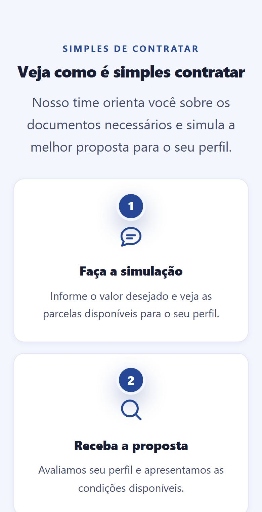
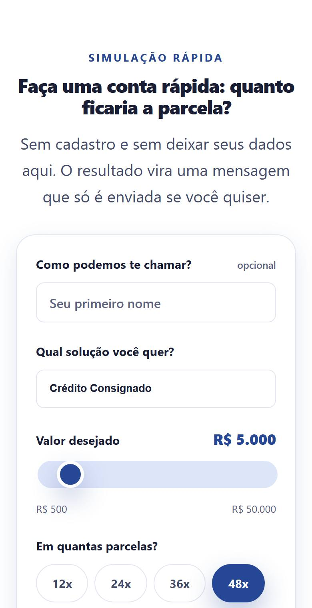
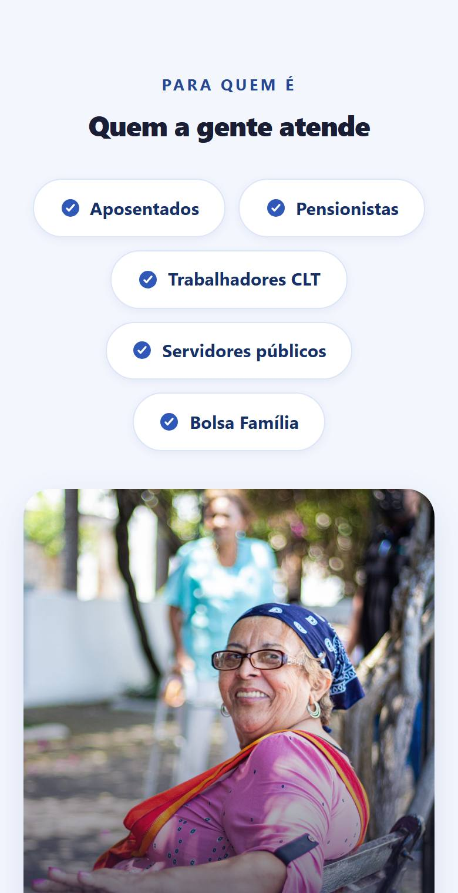

O que é novo
- Versão 0.6.0: a logo ficou maior, as imagens não saem mais recortadas e saíram as imagens de PCD.
O site
Abertura
A primeira tela diz quem é a Azul e já tem o caminho pro WhatsApp. Letra grande e tema claro: o público tem 60, 70, 80 anos.

Soluções
As 9 soluções do folder viraram cartões: consignado, imóveis, cartão consignado, veículos, FGTS e as outras.
- Falar sobre isso: abre o WhatsApp com a mensagem daquela solução.

Uma tela por solução
Cada solução tem a sua tela, com a pergunta que a pessoa faz (ex.: "Quanto dá pra antecipar do FGTS?") e o botão de falar com um consultor.
Atendimento
Atendimento próximo
Mostra que é gente de verdade atendendo, online ou na loja.

Como contratar
Os passos: simula, recebe a proposta, dinheiro na conta depois da assinatura digital.
Simulação

Conta rápida da parcela
A pessoa escolhe a solução e o valor e vê quanto ficaria a parcela, sem cadastro e sem deixar dados. O resultado vira uma mensagem que só vai pro WhatsApp se ela quiser.
- A taxa não aparece na tela de propósito: sem o Custo Efetivo Total não pode anunciar taxa.

Para quem é e dúvidas
Quem a Azul atende (aposentados, pensionistas, CLT, servidores) e as perguntas que todo mundo faz.
Mudar o site
Telefone, endereço e taxa
Contato e taxa do simulador ficam num arquivo só do site (dados.js). Mudou lá, muda no site inteiro.
- Pede pro Orfeu na Geral com o que mudou.
Publicar
O site fica no Netlify. Depois de mudar, a pasta do site sobe de novo e em 1 minuto está no ar.